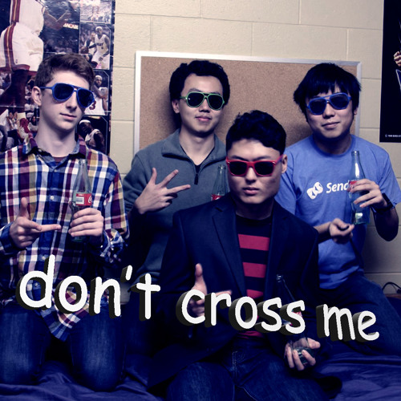

Don't Cross Me
A rockumentary
What is Don't Cross Me?
- A band*
- A commercial success†
- Art‡
- Features celebrity cameos ❦
- A way of life §
First: some background
What's my musical background?
- Did a lot of animation before doing CS
- Decided to learn to synthesize music for scores
- Played the flute in high school without using it in any music
- Did not sing

The first soundcloud upload
- Investigates an important research question: just how jarring can a drop be?
- Genre is tagged as "bad"
- Music historians generally do not consider this to be a proper Don't Cross Me release
Forming of the band
It is the end of 2014. I am in my first term at Waterloo. 2048 is still cool.
Forming of the band
There is an accumulation of bottles from the cafeteria. The Soundcloud exists. Ideas form.
- Made a name before making any music
- "Don't Cross Me" (gang sign is the cross product right-hand rule)
So here's how it went down
- Bottles were our only instruments, and we just held chords with no rhythm.
- We're all shy on the mic and residence rooms have no sound isolation.
- Therefore, draft #1 of the song sounded like a funeral dirge.
A solution
- Smother everything in synths
- It's super embarrassing to listen to
- This is probably why people listen to it
Another one
- It's one year later
- Moved out of residence
- We have a bunch more instruments
- It's time to step up our game
Pictured: an ocarina and a bass
Don't Cross Me is a band*
Don't Cross Me is a* band
The Ship of Theseus
- "In the metaphysics of identity, the ship of Theseus is a thought experiment that raises the question of whether an object that has had all of its components replaced remains fundamentally the same object." -Wikipedia
- If you replace all the band members, is it the same band?
A tally
- 33 different people have contributed
- Spans multiple generations ☞
- Songs recorded in 6 cities
☞ my sister is gen z
What are the requirements for joining?
- Option 1: be me
- Option 2: live with or near me ◊
- Not required:
- An instrument
- Talent of any kind
- Maybe required:
- Own a pair of lungs
- Not required:
◊ although we're trying remote collaboration with git now
Don't Cross Me is a commercial success†
This may not be obvious at first
Proof.
People have paid real money⌑ for our music. ■
⌑Backstory: TerribleHack
- A hackathon where you make your bad ideas a reality
- Naturally, getting companies to sponsor us is hard⁂
- We really only need enough money to get everyone Pizza
- What extra things will people pay for?
⁂but one time Zynga came to us offering to give us money??
⌑Backstory: TerribleHack
- 3D printing trophies didn't work too well
Idea: pay $20 and get a CD!
- We promised to have extra content not available for free on the internet
- This ended up being a one-take recording of the Bill Nye theme
- The second time, we didn't even put in that minimal effort¶
¶We did make some novelty album art though
Don't Cross Me is art‡
A syllogism
- "Good artists copy; great artists steal." -Abraham Lincoln

- Don't Cross Me copies.
- Therefore, Don't Cross Me is made of good artists.
More proof: Don't Cross Me is Dadaism
- From Wikipedia:
- "Its purpose was to ridicule the meaninglessness of the modern world"
- "It went against the standards of society"
- Relies heavily on assemblage art
- "The assembly of everyday objects to produce meaningful or meaningless pieces of work including war objects and trash"
- We use whatever is around as instruments
Audio assemblage
Visual assemblage ("collage")
Also, how is this not art?
Don't Cross Me features
celebrity cameos ❦
Two dimensions of them, anyway
Q: Why do we have all these large cutouts?
A1: Open-book exams are a thing
A2: home decoration...?
A3: for a guerrilla art project
Don't Cross Me is a way of life §
20th Century Women on Punk:
Dorothea: Ah, okay so... they're not very good, and they know that, right?
Abbie: Yeah, it's like they've got this feeling, and they don't have any skill, and they don't want skill, because it's really interesting what happens when your passion is bigger than the tools you have to deal with it. It creates this energy that's raw. Isn't it great?
The Don't Cross Me philosophy: high effort, low quality
The Don't Cross Me philosophy
It might not be good, but at least it should be fun
The Don't Cross Me philosophy
At the very least, it's shameless
- Started with everyone being embarrassed to sing
- Now we hold nothing back
- Trying and failing to play an instrument while the mic is on is part of the fun
- Some tracks are just me, with nowhere to hide; I never saw myself doing that 5 years ago
This could be you!
Feel free to join in on our next recording!